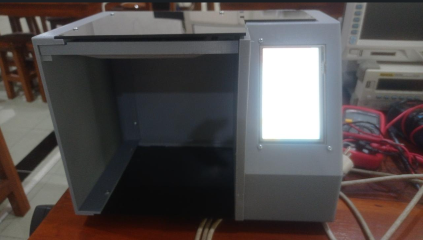

Automating Swallow Nest Quality with AI Vision
Bringing Consistency to Traditional Inspection Using Computer Vision 🐦

In many traditional industries, quality assessment still relies heavily on human experience. While effective, this approach often introduces subjectivity and inconsistency. This project addresses that challenge by developing an automated classification system for swallow nests using computer vision and deep learning.
The goal is simple: create a system that can evaluate quality in real time—objectively, consistently, and efficiently.
👁️ From Visual Inspection to AI Detection
Instead of manual inspection, this system uses the YOLO (You Only Look Once) algorithm to analyze images and classify nest quality instantly.
YOLO performs object detection and classification in a single pass, making it highly suitable for real-time applications. The system evaluates several visual features:
- Shape → structural completeness and form
- Color → indication of quality and processing level
- Moisture condition → inferred from texture and appearance
The result is a faster, more consistent, and scalable quality control process compared to traditional methods.
🖥️ Edge AI with Embedded System
To ensure practical deployment, the model runs on an embedded AI platform: NVIDIA Jetson Nano.
This approach enables:
- Real-time inference without cloud dependency
- Low latency for immediate decision-making
- Compact and cost-effective deployment in industrial environments
🛠️ My Role in the Project
I contributed across multiple aspects of the system, from AI model development to hardware setup and user interface design.
🤖 Computer Vision Development (YOLO)
I developed and trained the YOLO-based model, including dataset preparation, annotation, training, and performance optimization to ensure accurate and real-time detection.
⚙️ System Setup on Jetson Nano
I configured the NVIDIA Jetson Nano, including operating system installation, Python environment setup, and integration of the trained model for efficient edge deployment.
🖥️ Human-Machine Interface (HMI)
I designed an intuitive interface to display detection results, ensuring ease of use for non-technical users while providing real-time feedback from the AI system.
🚀 Why This Project Matters
- ✅ Reduces subjectivity in quality assessment
- ✅ Speeds up inspection process significantly
- ✅ Enables standardization in production
- ✅ Integrates AI into real industrial workflows
🌟 Final Thoughts
This project demonstrates how AI and embedded systems can modernize traditional industries. By combining YOLO-based detection with edge computing and a user-friendly interface, manual inspection is transformed into a fast, consistent, and intelligent process.
It shows that computer vision is not just about recognizing objects—it’s about creating real value in real-world applications.